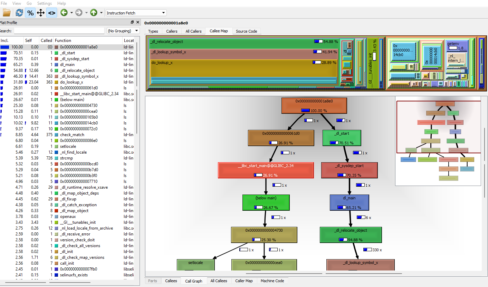

Profiling tools#
2024
The profiler analyzes the execution of a program to identify performance bottlenecks, memory leaks, and other inefficiencies. Profilers can be used to collect a variety of data about a program’s execution, including CPU usage, memory usage, function call counts, and instruction counts.
strace#
Trace all system calls in a program.
Example of use
$ strace /bin/ls
execve("/bin/ls", ["/bin/ls"], 0x7ffe3c89a0b0 /* 28 vars */) = 0
brk(NULL) = 0x561f928d5000
mmap(NULL, 8192, PROT_READ|PROT_WRITE, MAP_PRIVATE|MAP_ANONYMOUS, -1, 0) = 0x7fe9d75ab000
access("/etc/ld.so.preload", R_OK) = -1 ENOENT (No such file or directory)
openat(AT_FDCWD, "/etc/ld.so.cache", O_RDONLY|O_CLOEXEC) = 3
newfstatat(3, "", {st_mode=S_IFREG|0644, st_size=43302, ...}, AT_EMPTY_PATH) = 0
mmap(NULL, 43302, PROT_READ, MAP_PRIVATE, 3, 0) = 0x7fe9d75a0000
close(3) = 0
openat(AT_FDCWD, "/lib/x86_64-linux-gnu/libselinux.so.1", O_RDONLY|O_CLOEXEC) = 3
read(3, "\177ELF\2\1\1\0\0\0\0\0\0\0\0\0\3\0>\0\1\0\0\0\0\0\0\0\0\0\0\0"..., 832) = 832
newfstatat(3, "", {st_mode=S_IFREG|0644, st_size=174312, ...}, AT_EMPTY_PATH) = 0
mmap(NULL, 186064, PROT_READ, MAP_PRIVATE|MAP_DENYWRITE, 3, 0) = 0x7fe9d7572000
mmap(0x7fe9d7579000, 110592, PROT_READ|PROT_EXEC, MAP_PRIVATE|MAP_FIXED|MAP_DENYWRITE, 3, 0x7000) = 0x7fe9d7579000
mmap(0x7fe9d7594000, 32768, PROT_READ, MAP_PRIVATE|MAP_FIXED|MAP_DENYWRITE, 3, 0x22000) = 0x7fe9d7594000
mmap(0x7fe9d759c000, 8192, PROT_READ|PROT_WRITE, MAP_PRIVATE|MAP_FIXED|MAP_DENYWRITE, 3, 0x29000) = 0x7fe9d759c000
mmap(0x7fe9d759e000, 5840, PROT_READ|PROT_WRITE, MAP_PRIVATE|MAP_FIXED|MAP_ANONYMOUS, -1, 0) = 0x7fe9d759e000
close(3) = 0
openat(AT_FDCWD, "/lib/x86_64-linux-gnu/libc.so.6", O_RDONLY|O_CLOEXEC) = 3
read(3, "\177ELF\2\1\1\3\0\0\0\0\0\0\0\0\3\0>\0\1\0\0\0\220s\2\0\0\0\0\0"..., 832) = 832
pread64(3, "\6\0\0\0\4\0\0\0@\0\0\0\0\0\0\0@\0\0\0\0\0\0\0@\0\0\0\0\0\0\0"..., 784, 64) = 784
newfstatat(3, "", {st_mode=S_IFREG|0755, st_size=1922136, ...}, AT_EMPTY_PATH) = 0
pread64(3, "\6\0\0\0\4\0\0\0@\0\0\0\0\0\0\0@\0\0\0\0\0\0\0@\0\0\0\0\0\0\0"..., 784, 64) = 784
mmap(NULL, 1970000, PROT_READ, MAP_PRIVATE|MAP_DENYWRITE, 3, 0) = 0x7fe9d7391000
mmap(0x7fe9d73b7000, 1396736, PROT_READ|PROT_EXEC, MAP_PRIVATE|MAP_FIXED|MAP_DENYWRITE, 3, 0x26000) = 0x7fe9d73b7000
mmap(0x7fe9d750c000, 339968, PROT_READ, MAP_PRIVATE|MAP_FIXED|MAP_DENYWRITE, 3, 0x17b000) = 0x7fe9d750c000
mmap(0x7fe9d755f000, 24576, PROT_READ|PROT_WRITE, MAP_PRIVATE|MAP_FIXED|MAP_DENYWRITE, 3, 0x1ce000) = 0x7fe9d755f000
mmap(0x7fe9d7565000, 53072, PROT_READ|PROT_WRITE, MAP_PRIVATE|MAP_FIXED|MAP_ANONYMOUS, -1, 0) = 0x7fe9d7565000
close(3) = 0
openat(AT_FDCWD, "/lib/x86_64-linux-gnu/libpcre2-8.so.0", O_RDONLY|O_CLOEXEC) = 3
read(3, "\177ELF\2\1\1\0\0\0\0\0\0\0\0\0\3\0>\0\1\0\0\0\0\0\0\0\0\0\0\0"..., 832) = 832
newfstatat(3, "", {st_mode=S_IFREG|0644, st_size=629384, ...}, AT_EMPTY_PATH) = 0
mmap(NULL, 627592, PROT_READ, MAP_PRIVATE|MAP_DENYWRITE, 3, 0) = 0x7fe9d72f7000
mmap(0x7fe9d72f9000, 438272, PROT_READ|PROT_EXEC, MAP_PRIVATE|MAP_FIXED|MAP_DENYWRITE, 3, 0x2000) = 0x7fe9d72f9000
mmap(0x7fe9d7364000, 176128, PROT_READ, MAP_PRIVATE|MAP_FIXED|MAP_DENYWRITE, 3, 0x6d000) = 0x7fe9d7364000
mmap(0x7fe9d738f000, 8192, PROT_READ|PROT_WRITE, MAP_PRIVATE|MAP_FIXED|MAP_DENYWRITE, 3, 0x98000) = 0x7fe9d738f000
close(3) = 0
mmap(NULL, 12288, PROT_READ|PROT_WRITE, MAP_PRIVATE|MAP_ANONYMOUS, -1, 0) = 0x7fe9d72f4000
arch_prctl(ARCH_SET_FS, 0x7fe9d72f4800) = 0
set_tid_address(0x7fe9d72f4ad0) = 869
set_robust_list(0x7fe9d72f4ae0, 24) = 0
rseq(0x7fe9d72f5120, 0x20, 0, 0x53053053) = 0
mprotect(0x7fe9d755f000, 16384, PROT_READ) = 0
mprotect(0x7fe9d738f000, 4096, PROT_READ) = 0
mprotect(0x7fe9d759c000, 4096, PROT_READ) = 0
mprotect(0x561f913e7000, 4096, PROT_READ) = 0
mprotect(0x7fe9d75dd000, 8192, PROT_READ) = 0
prlimit64(0, RLIMIT_STACK, NULL, {rlim_cur=8192*1024, rlim_max=RLIM64_INFINITY}) = 0
munmap(0x7fe9d75a0000, 43302) = 0
statfs("/sys/fs/selinux", 0x7ffc981cb840) = -1 ENOENT (No such file or directory)
statfs("/selinux", 0x7ffc981cb840) = -1 ENOENT (No such file or directory)
getrandom("\x3c\xff\xd9\x4f\x31\x58\xe5\x6d", 8, GRND_NONBLOCK) = 8
brk(NULL) = 0x561f928d5000
brk(0x561f928f6000) = 0x561f928f6000
openat(AT_FDCWD, "/proc/filesystems", O_RDONLY|O_CLOEXEC) = 3
newfstatat(3, "", {st_mode=S_IFREG|0444, st_size=0, ...}, AT_EMPTY_PATH) = 0
read(3, "nodev\tsysfs\nnodev\ttmpfs\nnodev\tbd"..., 1024) = 478
read(3, "", 1024) = 0
close(3) = 0
access("/etc/selinux/config", F_OK) = -1 ENOENT (No such file or directory)
openat(AT_FDCWD, "/usr/lib/locale/locale-archive", O_RDONLY|O_CLOEXEC) = 3
newfstatat(3, "", {st_mode=S_IFREG|0644, st_size=3048928, ...}, AT_EMPTY_PATH) = 0
mmap(NULL, 3048928, PROT_READ, MAP_PRIVATE, 3, 0) = 0x7fe9d700b000
close(3) = 0
ioctl(1, TCGETS, {c_iflag=ICRNL|IXON, c_oflag=NL0|CR0|TAB0|BS0|VT0|FF0|OPOST|ONLCR, c_cflag=B38400|CS8|CREAD, c_lflag=ISIG|ICANON|ECHO|ECHOE|ECHOK|IEXTEN|ECHOCTL|ECHOKE, ...}) = 0
ioctl(1, TIOCGWINSZ, {ws_row=30, ws_col=120, ws_xpixel=0, ws_ypixel=0}) = 0
openat(AT_FDCWD, ".", O_RDONLY|O_NONBLOCK|O_CLOEXEC|O_DIRECTORY) = 3
newfstatat(3, "", {st_mode=S_IFDIR|0755, st_size=4096, ...}, AT_EMPTY_PATH) = 0
getdents64(3, 0x561f928dbce0 /* 30 entries */, 32768) = 800
getdents64(3, 0x561f928dbce0 /* 0 entries */, 32768) = 0
close(3) = 0
newfstatat(1, "", {st_mode=S_IFCHR|0620, st_rdev=makedev(0x88, 0x4), ...}, AT_EMPTY_PATH) = 0
write(1, "bin dev etc init lib32 "..., 99bin dev etc init lib32 libx32 media opt root sbin sys usr wsllbiimn wslLndgEP
) = 99
write(1, "boot Docker home lib lib64 "..., 98boot Docker home lib lib64 lost+found mnt proc run srv tmp var wsllkBFJL wslpLHphj
) = 98
close(1) = 0
close(2) = 0
exit_group(0) = ?
+++ exited with 0 +++
ltrace#
ltrace is a dynamic debugging tool that tracks library calls made by a program.
Example of use
$ ltrace -c /bin/ls
% time seconds usecs/call calls function
------ ----------- ----------- --------- --------------------
20.77 0.007439 55 135 __errno_location
18.41 0.006595 58 113 strlen
15.47 0.005542 53 104 strcoll
13.04 0.004672 55 84 __ctype_get_mb_cur_max
7.71 0.002760 54 51 __overflow
6.88 0.002466 57 43 memcpy
5.50 0.001971 63 31 readdir
4.38 0.001570 56 28 fwrite_unlocked
1.37 0.000491 61 8 getenv
1.35 0.000482 482 1 setlocale
0.61 0.000217 54 4 __freading
0.60 0.000216 54 4 reallocarray
0.55 0.000197 98 2 fclose
0.40 0.000143 143 1 opendir
0.38 0.000136 136 1 textdomain
0.32 0.000115 57 2 fileno
0.32 0.000113 56 2 __fpending
0.30 0.000108 54 2 fflush
0.28 0.000101 101 1 closedir
0.27 0.000096 96 1 ioctl
0.27 0.000096 96 1 isatty
0.18 0.000064 64 1 strrchr
0.17 0.000060 60 1 bindtextdomain
0.16 0.000058 58 1 __cxa_atexit
0.15 0.000055 55 1 _setjmp
0.15 0.000055 55 1 getopt_long
------ ----------- ----------- --------- --------------------
100.00 0.035818 624 total
callgrind#
valgrind --tool=callgrind [callgrind options] your-program [program options]
Visualisation the result with kcachegrind

cf. Callgrind: a call-graph generating cache and branch prediction profiler
perf#
Example of use
$ perf stat /bin/ls
Performance counter stats for '/bin/ls':
0.34 msec task-clock:u # 0.684 CPUs utilized
0 context-switches:u # 0.000 /sec
0 cpu-migrations:u # 0.000 /sec
84 page-faults:u # 244.257 K/sec
<not supported> cycles:u
<not supported> instructions:u
<not supported> branches:u
<not supported> branch-misses:u
0.000502696 seconds time elapsed
0.000592000 seconds user
0.000000000 seconds sys
Tracing function calls#
cf. Tracing with GCC
addr2line can map an address to the corresponding source file.
gprof#
Compile your program with the option -pg (either with the g++ or the gcc compiler). Run your program, which produces an extra file called gmon.out. Then run the following command to produce profiling information.
gprof a.out
where a.out is the name of your executable that you ran to profile
sprof#
gperftools#
heaptrack#
cf. https://linux.developpez.com/tutoriels/apprendre-heaptrack/